0x01 概念
Java类加载器(Java Classloader)是Java运行时环境(Java Runtime Environment)的一部分，负责动态加载Java类到Java虚拟机的内存空间中，用于加载系统、网络或者其他来源的类文件。Java源代码通过javac编译器编译成类文件，然后JVM来执行类文件中的字节码来执行程序。
0x02 类文件编译流程图
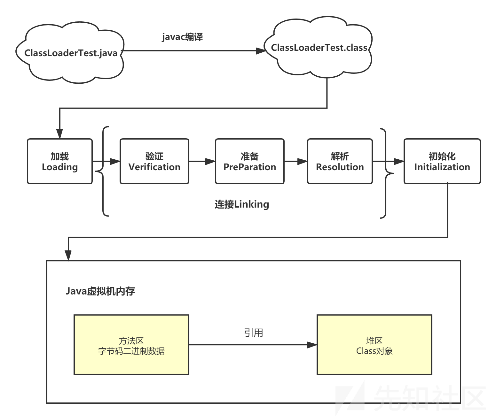
我们以上图为例子，比如我们创建一个ClassLoaderTest.java文件运行，经过javac编译，然后生成ClassLoaderTest.class文件。这个java文件和生成的class文件都是存储在我们的磁盘当中。但如果我们需要将磁盘中的class文件在java虚拟机内存中运行，需要经过一系列的类的生命周期（加载、连接（验证–>准备–>解析）和初始化操作，最后就是我们的java虚拟机内存使用自身方法区中字节码二进制数据去引用堆区的Class对象。
通过这个流程图，我们就很清楚地了解到类的加载就是由java类加载器实现的，作用将类文件进行动态加载到java虚拟机内存中运行。
0x03 应用场景
1、资源隔离
实现不同项目或者同一个项目上的不同版本的jar包隔离，避免集群错误或者冲突的产生。
2、热部署
对于Java应用程序来说，热部署就是在运行时更新Java类文件。在基于Java的应用服务器实现热部署的过程中，类装入器扮演着重要的角色。类装入器不能重新装入一个已经装入的类，但只要使用一个新的类装入器实例，就可以将类再次装入一个正在运行的应用程序。这样我们应用正在运行的时候升级软件，却不需要重新启动应用。
3、代码保护
我们可以对字节码文件进行加密，然后再使用特定的ClassLoader解密文件内容，再加载这些字节码文件。这样就能够实现对我们的代码项目加密保护，别人无法进行反编译查看源代码信息。
0x04 类加载器分类
在简单了解的类加载器的概念作用之后，我们可以看看java中类加载器的分类。类加载器大致分为两种，一种是JVM自带的类加载器，分别为引导类加载器、扩展类加载器和系统类加载器。另外一种就是用户自定义的类加载器，可以通过继承java.lang.ClassLoader类的方式实现自己的类加载器。
4.1 JVM默认类加载器
4.1.1 引导类加载器(BootstrapClassLoader)
引导类加载器(BootstrapClassLoader)，底层原生代码是C++语言编写，属于jvm一部分，不继承java.lang.ClassLoader类，也没有父加载器，主要负责加载核心java库(即JVM本身)，存储在/jre/lib/rt.jar目录当中。(同时处于安全考虑，BootstrapClassLoader只加载包名为java、javax、sun等开头的类)。
这里以我的电脑中jdk1.7为例，这里我们看到/jre/lib/rt.jar目录，这里面的类都是由BootstrapClassLoader来加载。
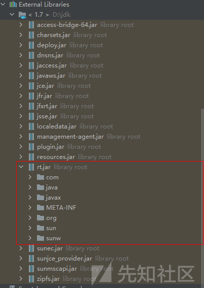
之后我们使用Object类为例，看看其是否存在父加载器。因为Object类是所有子类的父类，归属于BootstrapClassLoader。发现并没有父类加载器，结果为null。
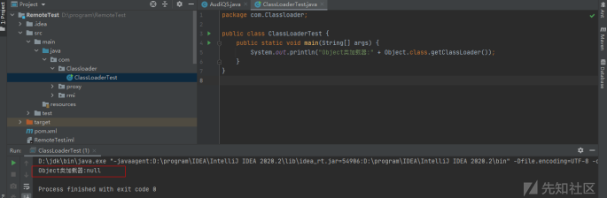
4.1.2 扩展类加载器(ExtensionsClassLoader)
扩展类加载器(ExtensionsClassLoader)，由sun.misc.Launcher$ExtClassLoader类实现，用来在/jre/lib/ext或者java.ext.dirs中指明的目录加载java的扩展库。Java虚拟机会提供一个扩展库目录，此加载器在目录里面查找并加载java类。
以我的电脑为例，这个目录下的jar包都是由ExtensionsClassLoader进行加载。
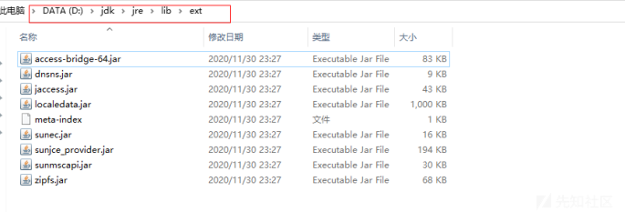
这里我们可以选择一个zipfs.jar包，然后查看下其jar中的ZipPath类加载器，发现存在于ExtensionsClassLoader。
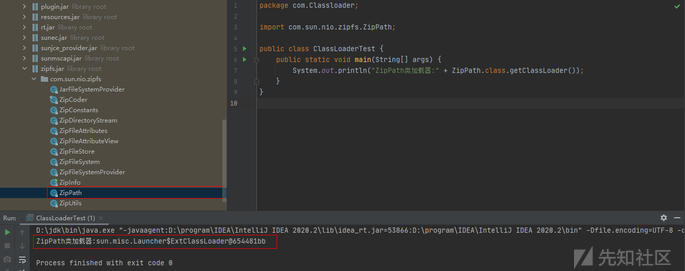
4.1.3 App类加载器/系统类加载器（AppClassLoader）
App类加载器/系统类加载器（AppClassLoader），由sun.misc.Launcher$AppClassLoader实现，一般通过通过(java.class.path或者Classpath环境变量)来加载Java类，也就是我们常说的classpath路径。通常我们是使用这个加载类来加载Java应用类，可以使用ClassLoader.getSystemClassLoader()来获取它。
这里我们使用本身写的ClassLoaderTest类进行测试，发现存在于AppClassLoader。
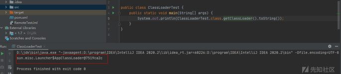
4.2 自定义类加载器(UserDefineClassLoader)
自定义类加载器(UserDefineClassLoader)，除了上述java自带提供的类加载器，我们还可以通过继承java.lang.ClassLoader类的方式实现自己的类加载器。具体实现方法我们等下单独讲解。
0x05 双亲委派机制
通常情况下，我们就可以使用JVM默认三种类加载器进行相互配合使用，且是按需加载方式，就是我们需要使用该类的时候，才会将生成的class文件加载到内存当中生成class对象进行使用，且加载过程使用的是双亲委派模式，及把需要加载的类交由父加载器进行处理。
概念有点绕，我们可以先看类加载器委派关系
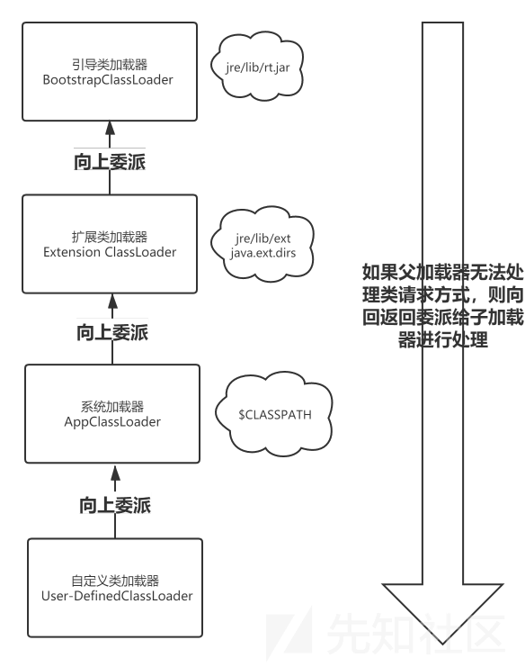
如上图类加载器层次关系，我们可以将其称为类加载器的双亲委派模型。但注意的是，他们之间并不是”继承”体系，而是委派体系。当上述特定的类加载器接到加载类的请求时，首先会先将任务委托给父类加载器，接着请求父类加载这个类，当父类加载器无法加载时（其目录搜素范围没有找到所需要的类时），子类加载器才会进行加载使用。这样可以避免有些类被重复加载。
5.1 双亲委派好处
1、这样就是能够实现有些类避免重复加载使用，直接先给父加载器加载，不用子加载器再次重复加载。
2、保证java核心库的类型安全。比如网络上传输了一个java.lang.Object类，通过双亲模式传递到启动类当中，然后发现其Object类早已被加载过，所以就不会加载这个网络传输过来的java.lang.Object类，保证我们的java核心API库不被篡改，出现类似用户自定义java.lang.Object类的情况。
假设我们创建一个java.lang包，自定义一个TestObject类，但由于双亲委派机制的存在，是不允许加载运行的。
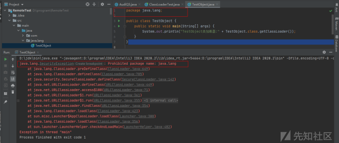
CLassLoader类核心方法
除了上述BootstrapClassLoader，其他类加载器都是继承了CLassLoader类，我们就一起看看其类的核心方法。以下代码都是截取了其方法的源码。
1、loadClass：加载指定的java类
protected Class<?> loadClass(String name, boolean resolve)
throws ClassNotFoundException
{
synchronized (getClassLoadingLock(name)) {
// First, check if the class has already been loaded
Class c = findLoadedClass(name);
if (c == null) {
long t0 = System.nanoTime();
try {
if (parent != null) {
c = parent.loadClass(name, false);
} else {
c = findBootstrapClassOrNull(name);
}
} catch (ClassNotFoundException e) {
// ClassNotFoundException thrown if class not found
// from the non-null parent class loader
}
if (c == null) {
// If still not found, then invoke findClass in order
// to find the class.
long t1 = System.nanoTime();
c = findClass(name);
// this is the defining class loader; record the stats
sun.misc.PerfCounter.getParentDelegationTime().addTime(t1 - t0);
sun.misc.PerfCounter.getFindClassTime().addElapsedTimeFrom(t1);
sun.misc.PerfCounter.getFindClasses().increment();
}
}
if (resolve) {
resolveClass(c);
}
return c;
}在loadClass方法中，它先使用了findLoadedClass(String)方法来检查这个类是否被加载过。
接着使用父加载器调用loadClass（String）方法，如果父加载器为null，类加载器加载jvm内置的加载器。
之后就调用findClass(String) 方法装载类。
最后通过上述步骤我们找到了对应的类，并且接收到的resolve参数的值为true,那么就会调用resolveClass(Class)方法来处理类。
2、findCLass：查找指定的Java类
protected Class<?> findClass(String name) throws ClassNotFoundException {
throw new ClassNotFoundException(name);
}3、findLoadedClass：查找JVM已经加载过的类
protected final Class<?> findLoadedClass(String name) {
if (!checkName(name))
return null;
return findLoadedClass0(name);
}4、defineClass：定义一个Java类，将字节码解析成虚拟机识别的Class对象。往往和findClass()方法配合使用。
protected final Class<?> defineClass(byte[] b, int off, int len)
throws ClassFormatError
{
return defineClass(null, b, off, len, null);
}5、resolveClass：链接指定Java类
protected final void resolveClass(Class<?> c) {
resolveClass0(c);
}
private native void resolveClass0(Class c);自定义类加载器过程
因为在实际应用过程中，我们不仅仅只希望使用classpath当中指定的类或者jar包进行调用使用，我们有时希望调用本地磁盘文件或者网络还可以使用自定义类加载器的方式。
在上面loadClass方法分析中，他内部其实是调用findClass(String) 方法来装载类，所以我们要想加载自己自定义的类，就是覆盖这个findClass(String) 方法，而不是loadClass方法。
以下就是自定义类加载器步骤：
1、继承ClassLoader类
2、覆盖findClass()方法
3、在findClass()方法中调用defineClass()方法
这里我们借助一个加密java类字节码例子来讲解。
这里我们先创建一个CypherTest.java文件，然后使用java -d . CypherTest.java，然后就能生成CypherTest.class文件了。
CypherTest.java文件
package com.test;
public class CypherTest {
public static void main(String[] args) {
System.out.println("This experiment test is successful");
}
}目录下生成了CypherTest.class文件。
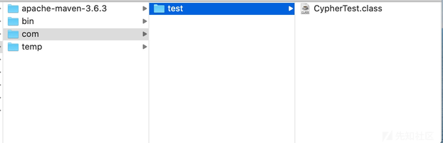
之后我们编写一个加密类Encryption，使用简单的逐位取反进行加密操作。
package com.testCypher;
import java.io.*;
public class Encryption {
public static void main(String[] args) {
encode(new File("/usr/local/com/test/CypherTest.class"), // 获取路径CypherTest.class文件
new File("/usr/local/temp/com/test/CypherTest.class")); // 为了保持一致，创建了一个空的temp目录
}
public static void encode(File src, File dest) {
FileInputStream fis = null;
FileOutputStream fos = null;
try {
fis = new FileInputStream(src);
fos = new FileOutputStream(dest);
// 逐位取反操作
int temp = -1;
while ((temp = fis.read()) != -1) {// 读取一个字节
fos.write(temp ^ 0xff);// 取反输出
}
} catch (IOException e) {
} finally { // 关闭数据流
if (fis != null) {
try {
fis.close();
} catch (IOException e) {
e.printStackTrace();
}
try {
fos.close();
} catch (IOException e) {
e.printStackTrace();
}
}
}
System.out.println("This experiment test is successful");
}
}之后我们看到生成了加密后新的CypherTest.class文件。
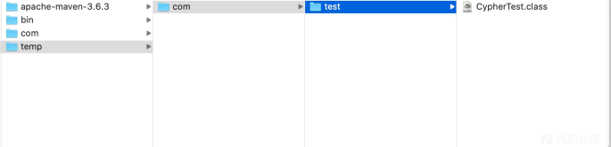
因为这个是自定义加密后，我们无法使用工具直接进行反编译操作和直接使用jvm默认类加载器去使用它。
之后我们再编写一个Dectyption解密类，对新加密的CypherTest.class进行解密操作。
package com.testCypher;
import java.io.ByteArrayOutputStream;
import java.io.FileInputStream;
import java.io.IOException;
import java.io.InputStream;
public class Decryption extends ClassLoader { // 继承ClassLoader类
private String rootDir;
public Decryption(String rootDir) {
this.rootDir = rootDir;
}
@Override // 重写覆盖findClass
protected Class<?> findClass(String className) throws ClassNotFoundException {
Class<?> c = findLoadedClass(className);
if (c != null) {
return c;
} else {
ClassLoader parent = this.getParent();
try {
c = parent.loadClass(className);
} catch (ClassNotFoundException e) {
// System.out.println("父类无法加载你的class，抛出ClassNotFoundException,已捕获，继续运行");
}
if (c != null) {
System.out.println("父类成功加载");
return c;
} else {// 读取文件 转化成字节数组
byte[] classData = getClassData(className);
if (classData == null) {
throw new ClassNotFoundException();
} else { // 调用defineClass()方法
c = defineClass(className, classData, 0, classData.length);
return c;
}
}
}
}
public byte[] getClassData(String className) {
String path = rootDir + "/" + className.replace('.', '/') + ".class";
// 将流中的数据转换为字节数组
InputStream is = null;
ByteArrayOutputStream baos = new ByteArrayOutputStream();
try {
is = new FileInputStream(path);
byte[] buffer = new byte[1024];
int temp = -1;
while ((temp = is.read()) != -1) {
baos.write(temp ^ 0xff);
}
return baos.toByteArray();
} catch (Exception e) {
e.printStackTrace();
return null;
} finally {
if (is != null) {
try {
is.close();
} catch (IOException e) {
e.printStackTrace();
}
}
if (baos != null) {
try {
baos.close();
} catch (IOException e) {
e.printStackTrace();
}
}
}
}
}这里我们使用将Decryption继承ClassLoader类，之后覆盖findClass()方法，并且在findClass()方法中调用defineClass()方法使用，最后加载我们自定义的getClassData方法去进行解密操作。
最后我们使用一个Demo进行测试，去查看当前类加载器机制的情况。如果我们想要获取其输出的System.out.println语句，需要反射机制去实现。这篇文章我们只学习ClassLoader类应用，就不去涉及其他知识点，获取其类加载器查看即可。
package com.testCypher;
public class Demo {
public static void main(String[] args) throws ClassNotFoundException {
Decryption deLoader = new Decryption("/usr/local/temp/");// 解密加载器
Class<?> t1 = deLoader.loadClass("com.test.CypherTest");// 加载已加密的类
System.out.println("c3 的Class是 " + t1);
}
}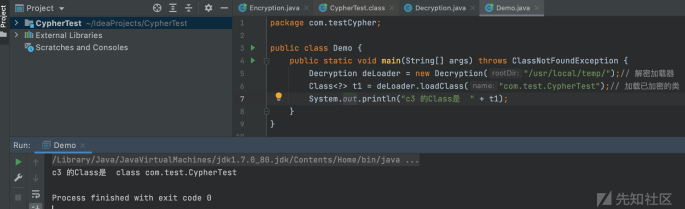
URLClassLoader
除了上述自定义ClassLoader类，我们还可以学习URLClassLoader。URLClassLoader类继承ClassLoader类，可以加载本地磁盘和网络中的jar包类文件。
1. 本地磁盘class文件调用
首先我在D盘创建了一个Test.java文件，写了一段calc.exe计算机弹窗代码。如果文件被成功解析执行，会输出Test success字段且弹出计算器。
package com.test;
public class Test {
public Test(){
System.out.println("Test success!!!");
try{
Runtime.getRuntime().exec("cmd /c calc.exe");
}
catch(Exception e) {
e.printStackTrace();
}
}
}然后使用javac进行编译，在D盘生成对应的class文件。
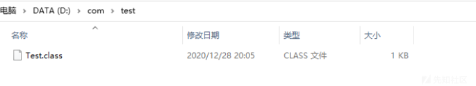
之后我们再修改ClassLoaderTest类，利用URLClassLoader方式去获取D盘中Test.class文件。
package com.Classloader;
import java.io.File;
import java.net.URI;
import java.net.URL;
import java.net.URLClassLoader;
public class ClassLoaderTest {
public static void main(String[] args) throws Exception{
File file = new File("d:/");
URI uri = file.toURI();
URL url = uri.toURL();
URLClassLoader classLoader = new URLClassLoader(new URL[]{url});
Class clazz = classLoader.loadClass("com.test.Test");
clazz.newInstance();
}
}这里使用File获取类文件路径，之后使用URLClassLoader获取url地址为D盘，之后使用loadClass方法获取Test.class所含包名，然后实例化。运行发现解析获取到了D盘中Test.class文件。
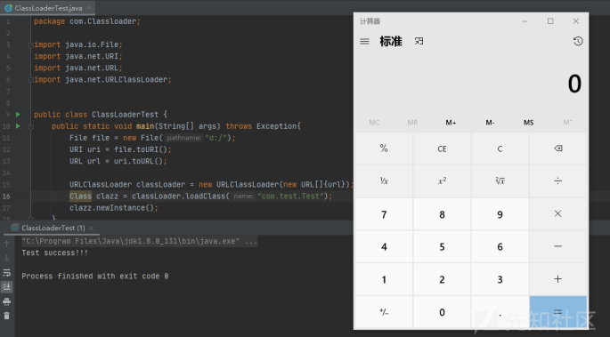
2. 网络传输class文件调用
之后我们将Test.class放置到电脑的Tomcat服务器目录下，然后启动Tomcat。之后新建个ClassLoaderDemo类网络加载Tomcat服务器中的Test.class.
package com.Classloader;
import java.net.URL;
import java.net.URLClassLoader;
public class ClassLoaderDemo {
public static void main(String[] args) throws Exception {
URL url = new URL("http://localhost:8080/examples/");
URLClassLoader classLoader = new URLClassLoader(new URL[]{url});
Class clazz = classLoader.loadClass("com.test.Test");
clazz.newInstance();
}
}这里使用URLClassLoader加载网络中的Tomcat服务器目录，成功解析获取到了目录下的Test.class文件。
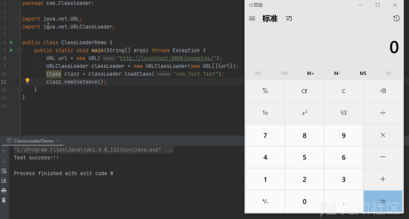
小结
通过ClassLoader类的学习，我们知道不仅仅局限于在ClassPath中类的调用，还能够通过自定义CLassLoader类来加载我们特定的类来操作利用。在安全领域当中，我们往往会使用其ClassLoader特性，自定义恶意的类加载webshell利用以及自定以类字节码的native方法绕过RASP检测。所以了解ClassLoader特性并进行自定义编写，对我们了解java安全机制十分重要。
转载大佬文章